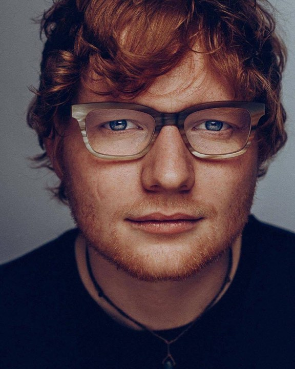
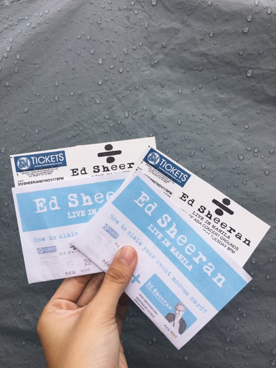
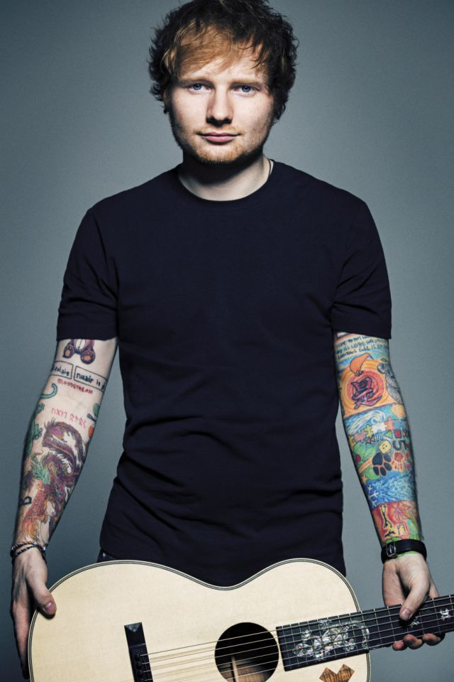

E D S H E E R A N ➕ ❌ ➗
Edward Christopher Sheeran , MBE (born 17 February 1991) is an English singer-songwriter,
guitarist and record producer. He was born in Halifax, West Yorkshire, and raised in Framlingham, Suffolk.
Sheeran's popularity abroad began in 2012. In the US, he made a guest appearance on Taylor Swift's fourth studio album, Red.
"The A Team" was nominated for Song of the Year at the 2013 Grammy Awards, where he performed the song with Elton John.
He spent much of 2013 opening for Swift's The Red Tour in North America dates. His second studio album, x (read as "multiply"),
was released on 23 June 2014. It peaked at number one in the UK and the US.
In 2015, x won the Brit Award for Album of the Year,
and he received the Ivor Novello Award for Songwriter of the Year. His single from x, "Thinking Out Loud", earned him two Grammy
Awards at the 2016 ceremony: Song of the Year and Best Pop Solo Performance.
Sheeran's third album, (read as "divide"), was released in March 2017. The album debuted at number one in the UK, the US and other major markets. The first two singles from the album, "Shape of You" and "Castle on the Hill", were released in January 2017 and broke records in a number of countries, including the UK,
Australia and Germany, by debuting in the top two positions of the charts.
He also became the first artist to have two songs debut in the US top 10 in the same week.
Sheeran appeared on Debrett's 2017 list of the most influential people in the UK. ((...read more))

As my beloved boyfie ❤
I've loved Ed Sheeran since I was in Highschool. I have learned to love him because of his written and recorded songs that bring nothing but "ahhhhw" and "huhu" feels. I so much love the way how he composes his songs, and my love for his genre makes me love him more. <3 I have influenced my family members and relatives, and good thing, we're all now Sheerios! Since I am an avid fan, I'll be seeing him on April 8, 2018 as he'll have a #DivideTourMnl concert!


copyright © 2018 Best Viewed In: Google Chrome Best Viewed In Screen Resolution: 1366 x 768